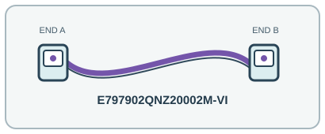

[ INDIVIDUAL COMPONENT // OPTICAL FIBER PATCH CORD ]
Corning E797902QNZ20002M-VI EDGE OM4 LC Uniboot Patch Cord
A compact, polarity-manageable uniboot LC patch cord intended for high-density OM4 multimode interconnects.

IDENTIFICATION: Exact manufacturer model/SKU: Corning E797902QNZ20002M-VI. Connector fit alone does not establish electrical, optical, protocol or platform compatibility.
Product specifications
| Manufacturer model / SKU | Corning E797902QNZ20002M-VI |
|---|---|
| Product type | OPTICAL FIBER PATCH CORD |
| Connector/end types | LC/UPC Uniboot duplex connector → LC/UPC Uniboot duplex connector; two-fiber reversible-polarity assembly. |
| Fiber grade / Ethernet category | OM4 50/125 µm ClearCurve multimode fiber. |
| Length | 2 m. |
| Bend radius and shielding | 2.0 mm tight-buffered LSZH/FRNC jacket; dielectric, not EMI-shielded. Corning specifies 15 mm minimum installation bend radius and 7.5 mm minimum operating bend radius. |
| Speed / distance limits | For compatible duplex 10GBASE-SR optics, OM4 channel reach is up to 400 m at 850 nm, subject to the full channel and transceiver budget. This duplex LC assembly is not an MPO SR4 trunk. Reach is a transceiver/channel property; the 400 m figure assumes a compliant OM4 10GBASE-SR channel. |
| Compatibility | OM4 duplex LC/UPC transceivers or panels; set/verify Uniboot polarity before installation and match connector polish/wavelength. Use only with multimode optics. |
Compatibility and handling
OM4 duplex LC/UPC transceivers or panels; set/verify Uniboot polarity before installation and match connector polish/wavelength. Use only with multimode optics.
Bend-radius note: 15 mm minimum while installing; 7.5 mm minimum after installation/in operation, per Corning product specification.
Shielding / jacket: Dielectric fiber with LSZH jacket; no metallic EMI shield.
Inspect the jacket, strain relief, latch and end faces before use. For optical assemblies, keep dust caps in place and never look into a live fiber. For copper/active-end assemblies, avoid tight bends and cable crushing; validate PoE and device compatibility from the relevant port documentation.
Manufacturer sources and technical references
- Corning — E797902QNZ20002M-VI EDGE product recordExact SKU, Uniboot connector format, OM4 grade, length and construction.
- Corning — E797902QNZ20002M-VI specification sheetManufacturer mechanical and optical specifications.
- Corning — 40/100G multimode fiber connectivityManufacturer guidance for OM4 link reach.
Manufacturer sources are HTTPS. Limits quoted here are link/application limits: the installed cable channel, transceivers, connectors, port support and installation quality determine actual service. Confirm model revision and regional documentation before deployment.